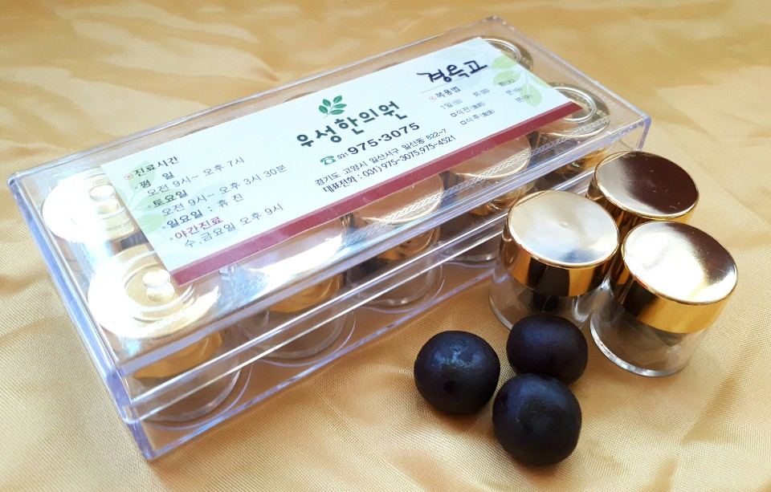
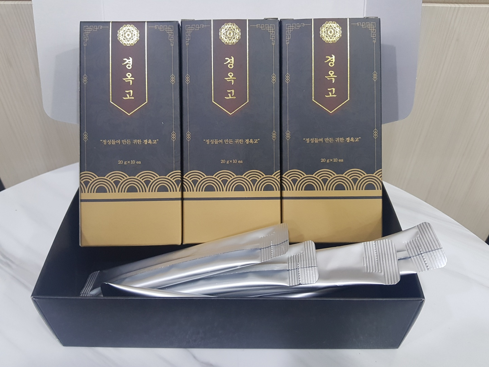
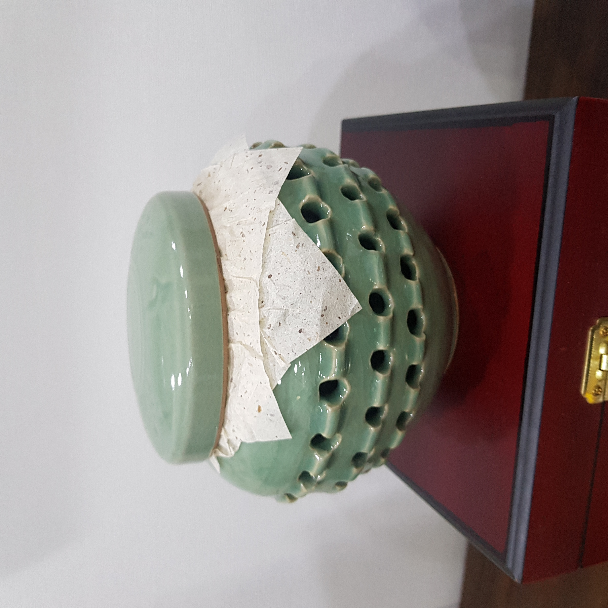

"정(精)과 수(髓)를 불려 주고 원기를 보하여 늙은이를 젊어지게 하고 모든 허손증을 보하며 온갖 병을 낫게 한다."
최상급 생지황, 인삼, 복령, 봉밀을 오랜 시간 정성껏 달여 쇠약해진 체력을 근본적으로 회복시킵니다.

씹어먹기 편한 고급스러운 제형

언제 어디서나 간편한 휴대용

온 가족이 함께 떠먹는 전통 방식
물 한 방울 넣지 않고 고귀한 약재만을 오랜 시간 정성으로 달여냅니다.
동의보감은 경옥고를 음액을 보태어 폐를 윤택하게 하고, 허로성 해수와 마른기침을 치료하는 최고의 명방으로 기록하고 있습니다. 소화기 질환과 신허(腎虛)로 인한 쇠약에도 널리 쓰여온 자양강장제입니다.
미세먼지로 인한 폐 내피세포의 활성 산소를 감소시키며, 만성폐쇄성폐질환(COPD) 모델에서 염증세포의 침윤과 조직학적 폐 손상 정도를 유의하게 억제하는 효과가 입증되었습니다.
발린, 아르기닌, 카르노신 등 아미노산이 풍부하여 근육 내 글리코겐을 늘려줍니다. 실제 축구선수 대상 연구에서 최대산소섭취량을 늘리고 운동 후 심박수 회복을 유의하게 향상시켰습니다.
파킨슨병 및 허혈성 뇌 손상 동물모델 연구에서 도파민성 뉴런의 소실을 억제하고 뇌 허혈로 유발된 인지 장애를 상당 부분 완화하여, 노인 환자의 장복 시 퇴행성 뇌 질환 예방에 도움을 줍니다.
항암제 투여로 면역이 약화된 상태에서 면역세포를 자극하는 사이토카인(IFN-r, IL-2 등)은 늘려주고, 염증성 반응을 유발하는 사이토카인은 감소시켜 신체 본연의 면역 방어력을 높여줍니다.
경옥고는 워낙 순한 명약이라 부작용은 거의 없습니다. 하지만 평소 소화기가 약하신 분들은 간혹 속이 약간 부글거리거나 대변이 묽어질 수 있습니다.
이는 장 기능이 조절되는 자연스러운 과정이니 안심하셔도 되며, 혹시라도 부담스러우시다면 식후에 드시거나 복용량을 살짝 줄여보시는 것을 추천해 드립니다.